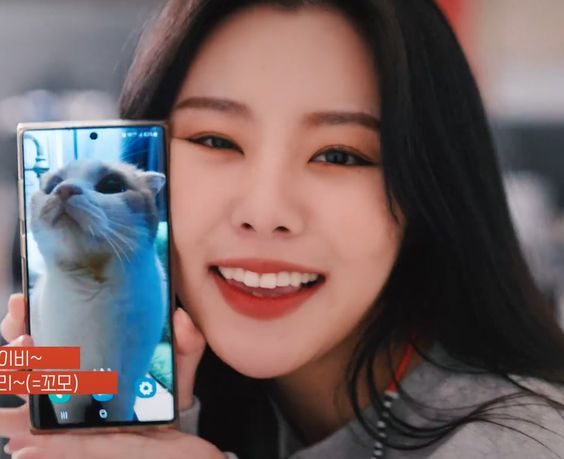

The members of Mamamoo
We are going to talk about the members of the group. They each have their own charm and that's what makes them special.
Solar

This is Solar. Solar is the leader of the group and also the oldest. Her position in the group is vocalist and leader, but also the mom of the group. Solar's birth name is Kim Yong Sun, she was born on Febuari 21th 1991 in Gangseo-gu Seoul. This makes her a pisces in the zodiac and she is 163cm tall. Solar graduated from Hanyang Women's University with a degree to become a flight attendent. She also graduated later from Modern K music Academy, to get more knowlege for her music career and become better in her musical craft. Solar is known for her strong vocals and big vocal range. A lot of people most of the time thinks she is the main vocalist in the group, but the group does not want a main vocalist and sees everyone as the same. In the kpop industry it's popular to do a MBTI test, this is a test that shows you what your personality is and all the goods/bads. Solar did a MBTI test and her restult was the INTJ (Introverted,Intuitive,thinking and judging). Solar is also popular for her dolphin laugh and it's very contagious.
Solar loves her youtube channel called Solarsido and she is always active on making new content when she has the time. It's a very popular youtube channel, because she always tries to create new content. A few of Solar creative activaties that she made were: earning a truck liscens, jumping out of an airplain, hypnotyse sesion, pulling out her wisdom thooth ect. Solar is known to have a very hyper and happy personality. A lot of her fans call her a walking meme and she also got the nickname Yeba. The nickname Yeba was made by her fellow member Moonbyul on a Vlive and she has kept it ever sinds. Yeba means pretty and stupid, she really loved the nickname and all here fans call her this now to. Solar is also getting in the musical industry just recently. She had her first gig for the musical MATA HARI as the leading rol Mata Hari. She was double casted with populare singer and now musical star Ock Joo-hyun who did the musical first. The musical premiered on May 28th 2022 and it ended on August 15th 2022. It's announced that Solar will starring in a french musical Notre-Dame de Paris, but than the korean version. It is said that she will be performing the musical on January 25th in 2024.

Solar also has a dog named Yongki and Yongki birthday is estimated on October 31st. Solar also made a youtube channel for her dog. Before Yonki she had a dog called Jjing Jjing. You can also see her dog in her youtube channel as well, but not a lot.


Solar has made 2 solo mini albums. Her first mini album was released on April 23th 2020 under the name "Spit it out". It was a big hit and she won prices for the song on kpop bank shows. After this succes she made an other comback on March 16th 2022 with the album Face and the title song named "honey". Solar didn't win any prizes, but the song became very populare. Since this comeback, she has only released songs together with Moonbyul and also with the group as a whole. We are still waiting for her 3th solo project.
Moonbyul
This is Moonbyul. Moonbyul is the second oldest of the group and her position in the group is a rapper and performer (dancer). Moonbyul's birth name is Moon Byul-yi and she was born in Bucheon, on December 22nd 1992. Her zodiac is a capricorn and she is 165cm tall. She has two sisters Seulgi and Yesol and they are both younger than her. Moonbyul graduated from Wonmi High school and later in her years she went to Paekche Institute of the Arts It was Moonbyuls dream to become a singer and her role model was and still is Taeyeon of the popular girl group Girls Generation. She later also met Taeyeon at the show and had to cry because she got nervous when they brought up that she was a fan. She let her know that she really helped her also through hard times. Moonbyul is known for her raps and she brings her own style and flair to it. She also writes all of her verses herself and is one of the most credited writers in the Kpop industy. When she auditioned, she originally wanted to become a vocalist, but she later switches to being the rapper of the group. Moonbyul just like Solar also did the MBTI test and het result was ENFP (Extraverted, Intuitive, Feeling and Prospecting). Moonbyul is known to be the joker of the group because she pranks her group members a lot. Her favorite target is Solar and they all always laugh about it. It's all fun and games, and they all do it to each other.
Moonbyul is also a host of a radio show called Studio Moon Night what she does when she is not busy with making music. On the radio show Moonbyul interviews guest, tells diffrent kinds of storys and also does mini games with her guests. She also had her fellow members on the show, one time together and also separately.


Moonbyul has 4 dogs, her first three are all Welsh Corgis. The names of her first 3 dogs are: Daebak (Big win), Haengwoon (Lucky) and Geongang (Health). . Deabak and Geongang are both male dogs and Haengwoonis the only female dog that she has. Later Moonbyul decided to rescue an other dog. This is also a male dog and his name is Janggu his name before this was Harang. Moonbyul made a instagram account where she posts her 4 dogs on.


Moonbyul's first solo song came out on May 23th 2018 with the album Selfish. The vibe of this this album is loving yourself even if you have to be selfish sometimes. The song that was populair and was promoted was just like the album name Selfish that had a feature with Seulgi from the girlgroup Red Velvet. After this Moonbyul released 6equence on January 19 2022. The song that she promoted was Lunatic, but also had two single song releases. The first one is featuring Mirani called G999 and the second one is featuring Seori called Shutdown.
Wheein
This is Wheein. Wheein is the second youngest in the group and her position in the group is vocalist and performer (danser). Wheein birth name is Jung Whee In, she was born in Jeonju, Jeollabuk-do on April the 17th 1995. This makes her a aries in the zodiac and she is 162cm tall. Wheein is known for her angelic voice and she is also a very talented vocalist. Just like the other members she too did a MBTI test and with the result she had ENFP, just like her felow member Moonbyul. Wheein's personality is also just like the other members bright, hyper, happy, but Wheein is also very shy. With people she is close with she will be super wild that's why her nickname is also mamamoo's puppy, but with strangers she does not know how to cope it's always a challange for her. Wheein also hates it when people call her cute, but everyone knows "including the members" that Wheein is the cute one in the group. Nowdays she has her shyness more under control and she is challenging her self more. he was always hesitant to go solo adn perform solo, but she found a way to this problem. Wheein is also very good at dancing, she loves it and does it also outside of her work. She even made a few dancing videos on youtube to show her dance and she really shows her diverse styles (from R&B to Hip Hop to Pop). Professional dancers even said that she dances like a professional and she has a lot of diffrent types of dance skillsets. They also said she picks up choreography very quick and she can do it while singing. Wheein is no longer with RBW, but is now signed under The L1ve. She will still be part of Mamamoo, Wheein is just under another label.
Wheein is very artistic. She love to creat and she does this a lot with drawing/painting. Wheein said that she makes one drawing every night before going to bed. She made a painting and used it for her album cover, in an other project she also painted on a canvas and put it in her videoclip. She is very talented and loves to take on new challenges. She for instant learned how to play the drums in only 30 days and performed this at one of there concert. Wheein is also super good at memorizing words and proved her skill on a variety show called Known Brothers. Wheein also has a youtube channel were she makes daily vlogs about her day and just fun activaties that she does. It's a very relaxing youtube channel and she also put humor in her vlogs.
Wheein also has a cat called Ggomo/Kkomo (named after her favorite yogurt brand as a kid). Wheein's cat is also quit famous because he has been in a few things relating Wheein. She has made a song for Kkomo named OHOOand Kkomo was also in the video. Kkomo is also all over Wheein's instagram, she also had a birthday vlog for Kkomo on her youtube channel. Her cat is a lot like her (in the way he acts) and fans of mamamoo love him a lot.


Wheein has made the most solo songs and was the first one in the group to get an solo mini album. Her first and still most popular song was released on her birthday April 17th 2018 and the album was called magnolia. She did not preform this song on music banks, but it was still a very popular song in the kpop industry. Wheein came out with her first mini album on April 13 2021 named Redd. She promoted the song Water color. After Redd she made her second mini album on January 16 2022 with the name Whee. This is the time when she changed agencies and made this album with The l1ve. The song that Wheein promoted was Make Me Happy and she also got her first solo award with this song. Wheein's last project is her first studio album, that got released on October 12 2023 and the name is In the mood. Her song that she promoted is also called In the mood. She will create a new project in 2024 and we will be waiting.
Hwasa
This is Hwasa. Hwasa is the youngest of the group and there for the maknae of the group. Hwasa position in the group is vocalist, rapper and maknae. Hwasa's birth name is Ahn Hye Jin, she was born in Jeonju Jeollabuk-do on july 23th 1995. This makes Hwasa a leo in zodiac and she is 162com tall. Hwasa has two elder sisters and she graduated from Wongwang information Arts High School. Hwasa and Wheein have known each other sinds middel school and have ever sinds been the best of friends. They both shared the same dream of becoming a singer and the person who inspired hwasa was Beyonce. For the last but defenetly not least member of mamamoo, Hwasa also has done a MBTI test and her result was INFP (Introverted, Intuitive, Feeling and Prospecting). Hwasa is known for her raspy and sexy tone of voice. Hwasa has left RBW and is now signed under PNation. just like Wheein, Hwasa will still be part of Mamamoo, just under a diffrent label.
Hwasa on stage really looks like a tough girl and has a firce precents on stage. In her daily life she is super cute and doesn't have the same fibe at all when on stage. She is the baby of mamamoo (Maknae) and she really lives up to the title.


Hwasa does not have a pet like her other members, because she is allergic to animals. Because all her members have a pet she wanted also something like it so she got herself a stuffed animal called Lion. Hwasa made this her pet and whenever the member would talk about there pets she would bring up her Lion and the members would also ask her questions about Lion (How is he doing,when can i see him again ect). It's all fun and games Hwasa knows it's not a real animal,but she just uses him so that she can also join the conversation.

Hwasa debuted with her first solo single album on February 13 2019 with Twit. After this she released her first mini album on June 29 2020, called Maria. Maria is Hwasa her baptismal name and how it is written on the album, is the same way as her tattoo. After the mini album she made a second solo single album on November 24 2021, called Guilty Pleasure The name of the song that she promoted was I'm a B. Her last released song is her third solo single album called I Love My Body, released on September 6 2023. She released this album with her new label PNation and just like Wheein she will make another project in 2024.